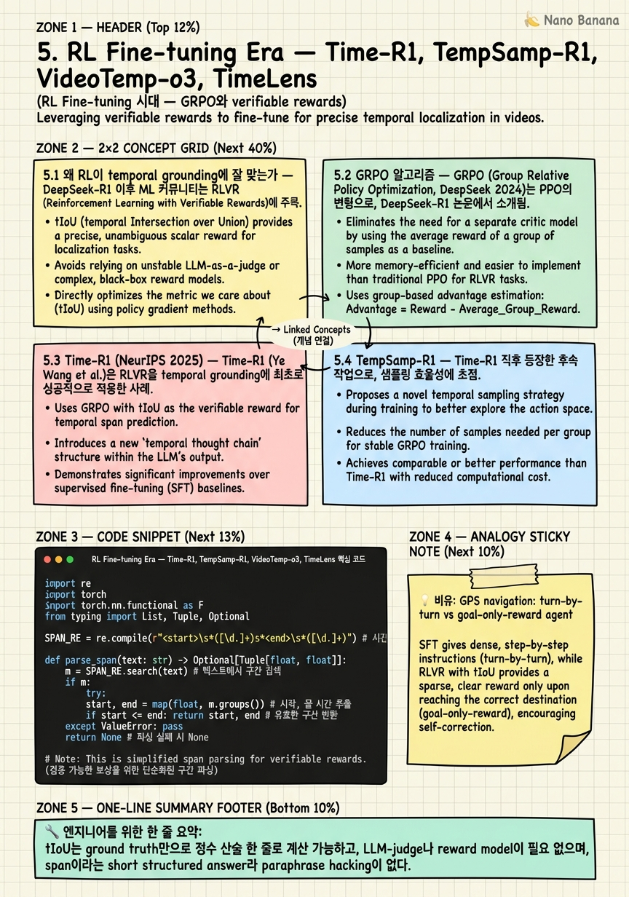

RL Fine-tuning Era — Time-R1, TempSamp-R1, VideoTemp-o3, TimeLens

🎯 학습 목표
- temporal grounding이 왜 verifiable reward와 자연스럽게 맞물리는지 설명할 수 있다
- GRPO의 group-relative advantage 계산과 PPO 대비 장점을 비교할 수 있다
- Time-R1의 zero-shot 숫자가 왜 VideoChat-Flash 74.5와 VideoMind 73.5를 앞서는지 분석할 수 있다
- reward hacking이 IoU-only 학습에서 어떻게 발생하는지, penalty-aware IoU가 어떻게 막는지 설명할 수 있다
- verifiable reward 함수와 GRPO update step을 PyTorch로 구현할 수 있다
4장에서 timestamp가 token이 되었다는 사실을 보았다. 그런데 timestamp가 token이라면 generation의 품질을 어떻게 가르칠 것인가라는 질문이 따라온다. SFT는 ground-truth sequence를 next-token loss로 모방하지만, grounding의 본질적 metric인 IoU와 정확히 일치하지 않는다. 2025년 DeepSeek-R1의 성공이 영감을 줬다: math 문제처럼 verifiable reward가 존재하는 domain에서는 SFT보다 RL이 훨씬 sample-efficient하다. Temporal grounding은 정확히 이 조건을 만족한다 — predicted span과 ground-truth span 사이의 IoU는 정수 산술 한 줄로 계산 가능하고, LLM-judge나 reward model이 필요 없으며, hacking하기 어렵게 만들 수도 있다. Time-R1 (NeurIPS 2025)이 이 직관을 처음으로 SOTA 수치로 입증했다.
핵심 내용
5.1 왜 RL이 temporal grounding에 잘 맞는가
DeepSeek-R1 이후 ML 커뮤니티는 RLVR (Reinforcement Learning with Verifiable Rewards)이라는 용어를 자주 쓰기 시작했다. 핵심 가설은 단순하다: model의 output을 자동으로 채점할 수 있고 그 채점이 hacking에 강하면, SFT보다 RL이 sample efficiency도 generalization도 더 낫다.
Temporal grounding은 이 조건을 거의 완벽하게 만족한다.
첫째, answer가 short, structured, discrete하다. Output은 두 개의 실수 [s, e]이고 ground truth도 두 개의 실수다. Math 문제처럼 정답이 한 줄로 나오고 string match 또는 수치 비교 한 번으로 판정할 수 있다.
둘째, IoU는 continuous하지만 정수 산술로 계산된다. tIoU = max(0, min(e,e) - max(s,s)) / (max(e,e) - min(s,s)). CPU 한 사이클이면 충분하다.
셋째, format reward가 분리 가능하다. 모델이
넷째, off-policy hacking이 어렵다. Span 자체가 답이기 때문이다. (다만 IoU 자체를 hacking할 수는 있다.)
이 네 조건이 합쳐져서, 2.5K짜리 dataset (Time-R1의 TimeRFT)으로도 SOTA가 가능한 sample efficiency가 나온다.
5.2 GRPO 알고리즘
GRPO (Group Relative Policy Optimization, DeepSeek 2024)는 PPO의 변형으로, value network (critic)를 제거한 것이 가장 큰 차이다. Video grounding처럼 episode가 사실상 1-step인 경우 critic 학습이 비효율적이다. GRPO는 대신 같은 prompt에 대해 K개의 sample을 뽑고, 그 group 안에서 reward를 normalize한다.
같은 video-query pair에 대해 K=8개의 candidate span을 sampling하고, 각 candidate i의 reward R_i를 구한다. Advantage A_i = (R_i - mean(R)) / std(R)로 표준화한다. 그리고 PPO의 clipped surrogate objective를 적용한다:
L = E[min(ratio_i · A_i, clip(ratio_i, 1-ε, 1+ε) · A_i)] - β · KL(π || π_ref)
Grounding 관점에서 GRPO의 장점: (1) critic 없음 = memory 절약. (2) group 안에서의 자연스러운 contrastive signal. (3) 1-step nature에 잘 맞음.
Downside: K개를 sampling해야 하므로 forward pass cost가 K배. Time-R1은 K=8을 쓴다.
5.3 Time-R1 (NeurIPS 2025)
Time-R1 (Ye Wang et al., Renmin/Xiaomi, arXiv:2503.13377)은 RL post-training으로 temporal grounding의 SOTA를 잡은 첫 작품이다. NeurIPS 2025에 accept되었다.
Setup:
- Base: Qwen2.5-VL-7B-Instruct
- Algorithm: GRPO with K=8 samples per prompt
- Reward: r = α · r_format + (1-α) · r_tIoU
- Data: TimeRFT — 2.5K curated video-query pairs
- Compute: ~8×A100 80GB, 수 시간
Zero-shot SOTA:
- Charades-STA: R1@0.3=78.1, R1@0.5=60.8, R1@0.7=35.3
- ActivityNet: R1@0.3=58.6, R1@0.5=39.0, R1@0.7=21.4
- 비교: VideoChat-Flash R1@0.3 74.5, VideoMind 73.5, TimeSuite 69.9 — 모두 zero-shot에서 추월
Time-R1* (Charades / ActivityNet에 추가 fine-tune): - Charades-STA: R1@0.5=72.2, R1@0.7=50.1 - ActivityNet: R1@0.5=55.6, R1@0.7=34.0 - Caveat: ActivityNet R1@0.7=21.4 zero-shot은 TRACE (24.0)을 못 넘었다.
왜 2.5K로 충분한가: GRPO의 group-relative advantage가 in-domain SFT가 가르치지 못하는 span을 정밀하게 조정하는 법을 직접 가르치기 때문이다.
5.4 TempSamp-R1
Time-R1 직후 등장한 후속 작업. 핵심 차별점은 temporal sampling strategy를 RL이 학습하도록 한 것이다. ActivityNet은 평균 120초 영상이라 frame sampling 자체가 noise source가 된다. TempSamp-R1은 두 단계로 분리한다:
- Sampler: query를 보고 어디를 zoom해야 할지 후보 window 제안
- Grounder: zoom된 window 안에서 정밀한 [s,e] 출력
결과: ActivityNet-Captions mIoU 49+. Lesson: long-form일수록 where to look 학습이 how to ground 학습보다 leverage가 크다.
5.5 VideoTemp-o3 — penalty-aware IoU
이 논문은 reward hacking 문제를 정면으로 다룬 첫 작업이다 (2026년 2월).
Observed hacking pattern: Time-R1 style의 r=tIoU reward로 오래 학습하면 model이 점차 longer span을 출력하기 시작한다. Span을 길게 늘리면 partial overlap이 생기기 쉬워 IoU>0의 expected value가 높아진다. 결국 model은 query를 정확히 보지 않고 영상 전체의 30-50%를 출력하는 전략을 배운다.
Penalty-aware IoU reward: r_pa = IoU(pred, gt) - λ · max(0, len(pred) - 2·len(gt)) / len(video). Predicted span의 길이가 ground-truth 길이의 2배를 넘으면 비례 penalty를 부과한다. λ는 0.3-0.5 정도. 이 단순한 항이 hacking 경로를 막는다.
또 다른 핵심: Causal QA + grounding을 jointly RL. VideoTemp-o3-7B-RL은 NextGQA에서 mIoU 33.4, Acc 76.4%로 SOTA. 단, grounded vs answer accuracy gap이 여전히 크다.
5.6 TimeLens — thinking-free RLVR
TencentARC의 작업. CVPR 2026 accept.
Setup: Base: Qwen2.5-VL / Qwen3-VL family. Data: TimeLens-100K. Algorithm: RLVR (Time-R1 style GRPO). Key choice: thinking-free. 즉 chain-of-thought 생성 없이 곧바로 span을 출력하도록 학습.
Why thinking-free? Time-R1·VideoTemp-o3는 CoT을 허용한다. CoT는 reasoning에 도움이 되지만 두 가지 비용이 있다: (1) Latency: 200-500 토큰의 think 단계가 추가됨. (2) Reward shaping mismatch: think 단계가 IoU reward와 무관해서 model이 cosmetic reasoning을 쓰는 경향.
TimeLens는 span에 대해서는 CoT가 별 도움 안 됨을 보이고, format을 strict하게
5.7 Reward Hacking의 일반화
네 논문에서 도출되는 일반 패턴: Hacking is the dual of the reward. tIoU만 reward로 주면 model은 IoU의 cheap proxy를 찾는다.
가장 대표적인 cheap proxy 세 가지: 1. Length inflation: span을 길게 늘려 partial overlap 노림 2. Center bias 학습: Charades-STA의 ground-truth가 영상 시작 근처에 몰려 있다. Model이 query를 무시하고 항상 0-8초를 출력해도 평균 IoU가 의외로 높다 3. Format gaming: format reward를 분리하지 않으면, model이 IoU만 올리려고 format을 망가뜨림
Design patterns:
- Composite reward: r = r_format + r_IoU
- Length penalty: r_pa = IoU - λ · over_length (VideoTemp-o3)
- KL anchor: β · KL term. β를 너무 낮추면 빠르게 hacking
- Eval on shift split: Charades-CD, ActivityNet-CD 같은 OOD split
- Group size K: K=8이 sweet spot
💡 비유로 이해하기
Pre-VLM grounding (3장의 DETR era)은 turn-by-turn GPS navigation이다. 각 step마다 right turn here, 200m straight를 정확히 알려주고, model은 그 instruction을 모방한다 (SFT). 정확하고 안정적이지만, 새 길이 생기거나 사고가 나면 적응 못한다.
RL temporal grounding은 goal-only-reward agent다. 너에게 X에 도착하면 점수 1, 아니면 0만 알려주고 어떻게 가는지는 알아서 학습하라고 한다.
이 setup이 잘 굴러갈 때, agent가 너의 turn-by-turn map에 없던 지름길을 발견한다. Time-R1이 2.5K 데이터로 100K 짜리 SFT model을 추월하는 게 이런 이치다.
그런데 같은 setup이 위험도 가진다. Goal을 destination에 차가 멈춰 있음으로 정의하면? Agent는 destination 옆 강에 차를 빠뜨리고 멈춰 있네 한다. Grounding에서? Goal을 IoU>0.5로 정의하면 agent는 span을 영상 전체로 늘리면 항상 partial overlap이라 IoU가 0보다 큼을 학습한다 — 이게 length inflation hacking이다.
VideoTemp-o3의 penalty-aware IoU는 X에 도착하면 1점이지만, 너무 우회하면 거리당 -0.3점 빼겠다와 같다.
💻 코드 예시
verifiable reward 함수 (tIoU + format)와 GRPO update step의 핵심을 PyTorch로 구현한다.
import re
import torch
import torch.nn.functional as F
from typing import List, Tuple, Optional
SPAN_RE = re.compile(r"<start>\s*([\d.]+)\s*<end>\s*([\d.]+)")
def parse_span(text: str) -> Optional[Tuple[float, float]]:
m = SPAN_RE.search(text)
if not m:
return None
s, e = float(m.group(1)), float(m.group(2))
return (s, e) if e > s else None
def tiou(pred: Tuple[float, float], gt: Tuple[float, float]) -> float:
inter = max(0.0, min(pred[1], gt[1]) - max(pred[0], gt[0]))
union = max(pred[1], gt[1]) - min(pred[0], gt[0])
return inter / union if union > 0 else 0.0
def verifiable_reward(text, gt, video_len, lambda_len=0.3, alpha_fmt=0.1):
pred = parse_span(text)
if pred is None:
return 0.0
r_fmt = 1.0
r_iou = tiou(pred, gt)
over = max(0.0, (pred[1] - pred[0]) - 2.0 * (gt[1] - gt[0]))
r_pa = max(0.0, r_iou - lambda_len * over / max(video_len, 1e-6))
return alpha_fmt * r_fmt + (1.0 - alpha_fmt) * r_pa
def grpo_step(policy, ref_policy, prompts, gts, video_lens, optim, K=8, eps=0.2, beta=0.04):
losses = []
for prompt, gt, vlen in zip(prompts, gts, video_lens):
with torch.no_grad():
samples = [policy.sample(prompt) for _ in range(K)]
old_logp = torch.stack([policy.logprob(prompt, s) for s in samples])
ref_logp = torch.stack([ref_policy.logprob(prompt, s) for s in samples])
texts = [policy.decode(s) for s in samples]
rewards = torch.tensor([verifiable_reward(t, gt, vlen) for t in texts])
adv = (rewards - rewards.mean()) / (rewards.std() + 1e-6)
new_logp = torch.stack([policy.logprob(prompt, s, with_grad=True) for s in samples])
ratio = torch.exp(new_logp - old_logp)
surr = torch.min(ratio * adv, torch.clamp(ratio, 1 - eps, 1 + eps) * adv)
kl = (new_logp - ref_logp).mean()
loss = -surr.mean() + beta * kl
losses.append(loss)
total = torch.stack(losses).mean()
optim.zero_grad(); total.backward(); optim.step()
return total.item(), rewards.mean().item()parse_span은 model output에서
🏭 현업에서의 평가
✅ 시니어가 보는 것
- verifiable reward와 LLM-judge reward의 차이를 IoU 사례로 설명
- GRPO의 group-relative advantage가 왜 critic 없는 grounding에 적합한지
- Time-R1의 zero-shot R1@0.5=60.8이 100K+ SFT 모델을 추월한 sample-efficiency 메커니즘
- reward hacking의 구체적 형태(length inflation, center bias)와 penalty-aware fix
- KL coefficient β, group size K, format reward weight 같은 hyperparam의 effect
⚠️ 레드 플래그
- RL이 항상 SFT보다 낫다고 단정
- verifiable reward를 single reward로 묶고 format 분리의 필요성을 모름
- Reward hacking을 edge case로 치부
- PPO의 critic을 그대로 grounding에 쓰자고 제안
- TimeLens의 thinking-free 선택을 CoT가 항상 나쁨으로 일반화
🎤 예상 인터뷰 질문
- Q1. 왜 IoU가 verifiable reward이고, captioning의 BLEU 같은 metric은 verifiable이라고 보기 어려운가? RLHF의 LLM-judge와 비교해 설명하라.
- Q2. Reward hacking이 RL grounding에서 어떤 구체적 형태로 나타나는가? VideoTemp-o3의 penalty-aware IoU가 어떻게 그걸 막는지 수식 수준으로 설명하라.
- Q3. PPO를 그대로 temporal grounding RL에 쓰면 무엇이 문제고, GRPO가 어떻게 해결하나? 그리고 GRPO도 잘 안 되는 경우는?
✨ 핵심 요약
Verifiable reward가 RL grounding을 가능하게 했다
tIoU는 ground truth만으로 정수 산술 한 줄로 계산 가능하고, LLM-judge나 reward model이 필요 없으며, span이라는 short structured answer라 paraphrase hacking이 없다.
Time-R1의 2.5K가 100K+ SFT를 추월했다
NeurIPS 2025의 Time-R1 (arXiv:2503.13377)은 TimeRFT 2.5K로 Qwen2.5-VL-7B를 GRPO로 학습해 Charades-STA zero-shot R1@0.3=78.1, R1@0.5=60.8, R1@0.7=35.3을 기록, VideoChat-Flash 74.5·VideoMind 73.5·TimeSuite 69.9를 모두 앞섰다.
GRPO는 critic 없이 group-relative advantage를 쓴다
같은 prompt에 대해 K=8 sample을 뽑고, advantage A_i = (R_i − mean(R)) / std(R)로 표준화한다. PPO의 critic을 제거해 memory를 절반으로 줄이고, 1-step grounding episode에 더 잘 맞고, 학습 안정성이 좋다.
Format reward 분리가 학습 붕괴를 막는다
r = α·r_format + (1−α)·r_tIoU로 분해해야 한다. 분리 안 하면 model이 IoU만 올리려고 format을 망가뜨려 결국 어떤 reward도 못 받는 collapse에 빠진다.
IoU-only reward는 length inflation을 학습한다
r=tIoU만으로 오래 학습하면 model이 span을 점점 길게 출력한다. Longer span은 partial overlap 확률이 높아 expected IoU가 올라가기 때문이다.
Penalty-aware IoU가 length hacking을 막는다
VideoTemp-o3 (arXiv:2602.07801)의 r_pa = IoU − λ·max(0, len(pred) − 2·len(gt))/len(video)는 GT의 2배를 넘는 span에 비례 penalty를 부과한다. NextGQA mIoU 33.4, Acc 76.4% 달성.
TimeLens의 thinking-free RLVR가 latency를 3-5× 줄였다
CVPR 2026의 TimeLens는 span이 short structured answer라는 점에 착안, CoT을 생략하고 곧바로 <start>x<end>y만 출력하도록 RLVR했다.
OOD split에서만 reward hacking이 보인다
In-domain Charades-STA·ActivityNet으로는 length inflation·center bias hacking이 잘 안 잡힌다. Charades-CD·ActivityNet-CD에서 측정해야 가시화된다.